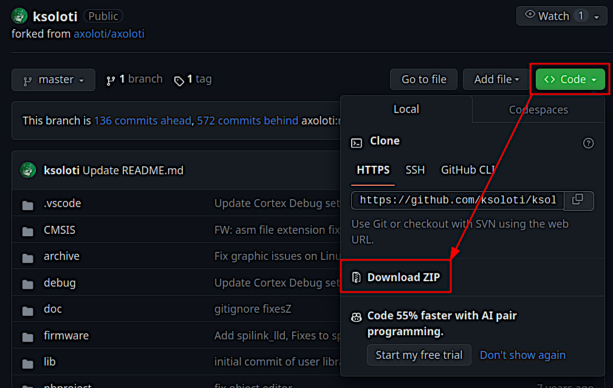

3.1 Install on Windows

Main window of the Axoloti Patcher
The install process for Ksoloti is identical to Axoloti with a few extra steps. To reduce size we split the application into two parts, the main Axoloti application, and a runtime which contains other required files. You must download and install both.
Note that you may also have to install Java. Try without installing Java first in order to not mess up your system’s current Java configuration (if any). If the Patcher does not start or complains that Java was not found you can get it here.
If your Ksoloti Core is currently connected via USB, disconnect it now.
-
Install the runtime. Go to https://github.com/axoloti/axoloti/releases/tag/1.0.12-2 and download the latest axo_runtime_win-(version).zip (at the time of writing: axo_runtime_win-1.0.12.zip).

Extract the zip file and move the folder axoloti_runtime to
- C:\Program Files (x86)\ (64-bit Windows), or
- C:\Program Files\ (32-bit Windows)
Check that you have the correct folder structure:
- C:\Program Files (x86)\axoloti_runtime\platform_win, or
- C:\Program Files\axoloti_runtime\platform_win
Now the Axoloti runtime is installed. You will not have to move or edit it unless there is a big update, or you reinstall your OS, etc.
-
Install the Patcher. From the link in step 1, download the newest axoloti-win-(version).msi (at the time of writing: axoloti-win-1.0.12-2-java1.8.0-191-wix3.11.msi) and execute it.

If you get a warning from Windows about running an untrusted program, this is due to it not being signed. You can safely ignore this. Click on More Info, and then click on Run Anyway (or similar).
Go through the installation process.
-
The Patcher is now installed and we need to link it to the Ksoloti custom firmware. Go to https://github.com/ksoloti/ksoloti and download the source code as a zip file.
Extract the file ksoloti-master.zip (or similar) to a location of your choice. I usually place it in My Documents.